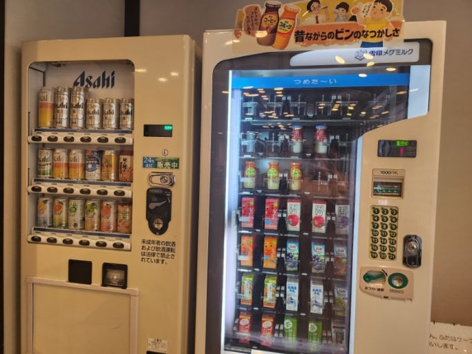
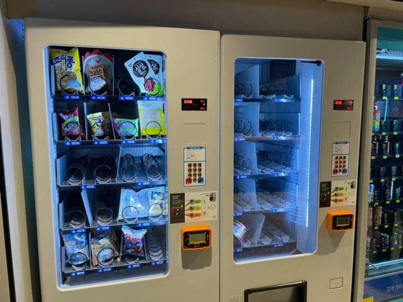
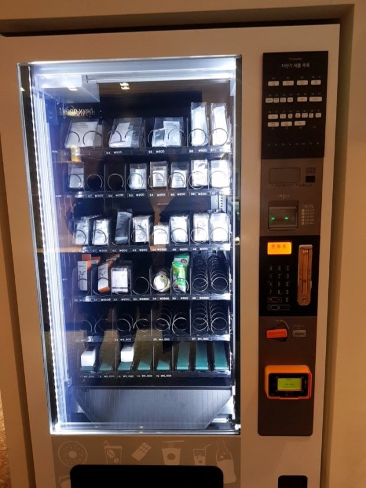

설치 위치와 이용 고객,
운영 목적을 확인합니다.
PRODUCT INSTALLATION GUIDE
우리 지역에 맞는
무인자판기 설치를
안내해드립니다.
음료·간식·간편식부터 생활용품까지,
공간의 이용 패턴을 읽고 맞춤형 자판기 운영을 설계합니다.

전국 설치 상담지역별 맞춤 안내
REGIONAL GUIDE
설치할 지역을
선택해주세요.
전국 시·도 어디서든 상담 가능합니다. 지역을 선택하면 해당 지역의 추천 업종과 운영 포인트를 확인할 수 있습니다.
PAYMENT SOLUTION
단말기 상품도
지역별로 확인하세요.
이동식 카드단말기, 휴대용 단말기, 테이블오더, 무인키오스크 상품을 시군구별로 안내합니다.
INSTALLATION PROCESS
상담부터 운영까지,
네 단계로 간단하게.
자판기 종류와 상품,
결제 옵션을 안내합니다.
설치와 결제 연결,
상품 진열까지 진행합니다.
재고·매출 확인과
운영 방법을 안내합니다.
CITY & COUNTY GUIDE
전국 세부 지역도
바로 찾아보세요.
광역 지역을 선택하면 시·군·구별 스마트무인자판기 설치 안내로 이어집니다.
서울 자치구25개 구별 설치 안내↗부산 구·군16개 구·군별 설치 안내↗대구 구·군9개 구·군별 설치 안내↗인천 구·군10개 구·군별 설치 안내↗광주 구5개 구별 설치 안내↗대전 구5개 구별 설치 안내↗울산 구·군5개 구·군별 설치 안내↗세종 읍·면·동생활권별 설치 안내↗충북 시·군11개 시·군별 설치 안내↗충남 시·군15개 시·군별 설치 안내↗전북 시·군14개 시·군별 설치 안내↗전남 시·군22개 시·군별 설치 안내↗강원 시·군18개 시·군별 설치 안내↗경북 시·군23개 시·군별 설치 안내↗경남 시·군18개 시·군별 설치 안내↗제주 시·읍·면지역별 설치 안내↗
INSTALLATION REVIEWS
설치한 공간의
운영 모습을 소개합니다.
설치 현장 사진과 함께 공간별 상품 구성, 결제 세팅, 재고 보충 동선을 정리한 운영 사례입니다.

음료 판매 공간 · 캔·페트 음료 분리 운영
“캔 음료와 페트 음료를 기기별로 나눠 진열하니 원하는 상품을 빠르게 찾을 수 있어요. 판매 중인 상품과 재고 상태가 한눈에 보여 보충할 품목을 확인하기도 편해졌습니다.”운영 후기

식품 판매 공간 · 냉동·포장식품 전용 자판기
“종류가 다른 냉동·포장식품을 칸별로 구분해 두니 고객이 상품을 비교하기 쉽고 진열도 깔끔하게 유지됩니다. 카드 결제가 가능해 직원이 없는 시간에도 편리하게 이용하고 있어요.”운영 후기

숙박 편의 공간 · 생활편의용품 자판기
“갑자기 필요한 생활용품을 프런트 운영 시간과 관계없이 구매할 수 있어 고객 문의가 줄었습니다. 작은 상품도 종류별로 정리해 판매할 수 있어 공간 활용과 재고 관리 모두 만족스럽습니다.”운영 후기